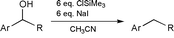

Reduction of benzylic alcohols with in situ formed Me3SiIJ. Chem. Soc. Chem. Commun., 1168-1169 (2001) [ Back to the Chemistry Archive ] The use of iodotrimethylsilane (TMSI), generated in situ from ClSiMe3 (TMSCl) and NaI in dry CH3CN, is known to be a useful reagent for the reduction of secondary benzylic alcohols.1-3 Although infrequently utilized, this reagent provides high yields of the deoxygenated toluene products, particularly for electron rich aromatic systems. The near exclusive use of these conditions for electron rich substrates may be associated with the proposed intermediacy of a benzylic stabilized carbocation at the reduction site. We now report that in situ TMSI reductions can be extended to moderately electron deficient benzylic alcohols, and that these conditions are selective in the presence of other reduction sensitive functional groups. Our interest in the area began when we required a preparation of 3-(4-fluorobenzyl)pyridine. Being a previously unknown compound, we envisaged that it should be accessible via a Grignard reaction to form the benzylic alcohol, followed by selective benzylic -OH reduction in the presence of the potentially reduced pyridine ring. In practice, the Grignard reaction, using commercially available 4-fluorophenylmagnesium bromide 1 and 3-formylpyridine 2 in Et2O at 0 °C, readily provided the benzylic alcohol 3 in 74% yield after flash chromatography. At this stage of our work we followed the in situ TMSI benzylic alcohol reduction conditions from the first pertinent literature paper we could locate.3 This reference used 6 eq. each of TMSCl and NaI with acetonitrile as solvent at 0 °C for 5 min. Under these conditions, however, we did not observe any reduction product. Eventually we found that upon heating the reaction to 55 °C (the boiling point of TMSCl) overnight we obtained a near quantitative 4 after standard workup (see Table 1, Ex. 1).  In situ TMSI reduction of electron deficient benzylic alcohols
Upon subsequently conducting a more thorough literature search, we were surprised to find that the defluoro analog of our above example was reported4 to provide a 0% yield under attempted TMSI reduction. Because this particular paper was mainly concerned with electron rich systems, which proceeded quickly at low temperature, these workers may not have attempted the higher temperature and longer time that we had found necessary. Indeed, when we attempted the reduction of 1-(3-pyridyl)phenylmethanol at 55 °C (Ex. 2), we found that the reduction did proceed, although quite slowly. After 5 days the reduction was observed to be 67% complete by proton NMR. Having thus established that electron poor 3-pyridyl benzylic alcohols were successful substrates for the in situ TMSI reduction, we then explored several other electron deficient examples to begin to understand the scope of the reaction. These results are summarized in the Table 1, Examples 1-8. It is apparent from these results that moderately electron deficient diarylmethanols are good substrates for this reduction. Comparison of Ex. 3-5 illustrates that increasingly electron deficient systems, as by the sequential introduction of more fluorines onto the rings, led to much slower reactions and poorer yields. The reaction of the 2-pyridyl analog (Ex. 6), with the electron deficient node directly adjacent to the reaction center, failed completely. Strongly electron deficient 4-nitrophenyl groups provide poor substrates, giving a low yield for the doubly aromatic analog Ex. 8, and failing to react for monobenzylic analog Ex. 7. With this success for the in situ TMSI reduction of moderately electron poor benzylic alcohols, we then sought to take advantage of these conditions for selective reductions. Aldehydes, ketones, and nitriles are examples of mild electron withdrawing aromatic substituents which are widely found in the chemical literature. For substrates containing any of these three functional groups, reductive cleavage of a benzylic -OH under more standard conditions,5 such as catalytic hydrogenation,6 could be problematic. In fact, a literature search for benzylic alcohol reduction in the presence of an aldehyde or ketone failed to identify any direct methods. As shown in Examples 9-12, we have applied the in situ TMSI method to a series of these sensitive molecules. In all cases, the benzylic -OH was reductively cleaved to provide the toluene product and leave the -CN, -Ac, and - CHO groups intact. These conditions, therefore, appear to be suitable for more widespread use. References [1] T. Sakai, K. Miyata, M. Utaka and A. Takeda, Tetrahedron Lett., 1987, 28, 3817
|
||||||||||||||||||||||||||||||||||||||||||||||||||||||||||||||||||||||||||||||||||||